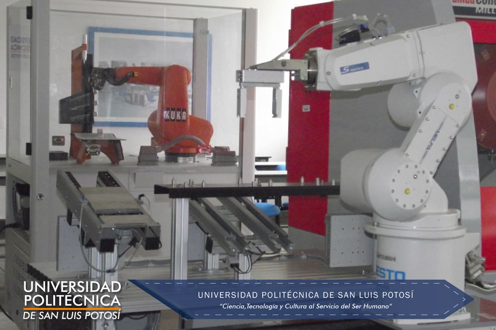

El CMA – Centro de Manufactura Avanzada es un edificio diseñado y habilitado especialmente para disponer de todas las tecnologías de automatización y control de procesos, de medición, máquinas-herramientas, soldadura y plásticos que atiende las necesidades de prácticas y certificaciones de los estudiantes y se encuentra distribuido de la siguiente manera:
Este laboratorio cuenta con equipamiento para realizar prácticas de Manufactura Integrada por Computadora, Control Numérico y Robótica. El equipo localizado en el laboratorio está constituido por un sistema de Manufactura Integrada por Computadora inteligente (iCIM) de acuerdo al manual de FESTO ® que es la empresa que diseña y provee gran parte del equipamiento.
A su vez el iCIM, está integrado por diferentes estaciones como son: Un sistema de Transporte, una estación AS/RS que proporciona y almacena las piezas de trabajo. Una estación de Ensamble por Robot (Mitsubishi ®), una estación de acoplamiento CNC (torno, fresa y robot (Mitsubishi ®)), un Robot SCARA (Mitsubishi ®) y una celda de control por computadora con software específico.
Además de los tres robots mencionados se cuenta con un robot Kuka, el cual puede ser integrado al sistema de manufactura, o ser utilizado para prácticas de robótica por medio de brazos articulados de tipo industrial. No forma parte del sistema de manufactura pero si es empleado para realizar prácticas de robótica.
Este es un laboratorio exclusivo para el uso de software de dibujo asistido por computadora y manufactura asistida por computadora donde se asigna al alumno una computadora para utilizarla durante el proceso de enseñanza-aprendizaje de asignaturas como Dibujo, Manufactura Integrada por Computadora I, Robótica y CNC.
Para la realización de prácticas relacionadas con materiales plásticos, la UPSLP cuenta con una máquina inyectora de plásticos.
Para llevar a cabo prácticas de soldadura se tienen tres máquinas de soldadura por arco eléctrico.
En este laboratorio se realizan prácticas de procesos de manufactura I, donde se desarrollan las habilidades y destrezas de los alumnos empleando las máquinas y herramientas de uso común en la industria.
El laboratorio de metrología cuenta con una gran variedad de equipo de medición dimensional, analógica y digital permitiendo al alumno prepararse para cumplir con los estándares de calidad en los productos a través del cuidado de las medidas y tolerancias que demandan los clientes. Además se tiene una máquina de pruebas de dureza de materiales y como parte del entrenamiento en medición se cuenta con una máquina de coordenadas la cual se localiza en un espacio reservado dentro del laboratorio LM1, especialmente acondicionado.
En este laboratorio en particular se encuentra equipo de automatización hidráulico, además, se tiene equipamiento para programación de microcontroladores (microchip ® y/o Arduino ®) así, como diverso equipo de National Instruments ®. Aquí el alumno adquiere diversas competencias para la programación, diseño y análisis de sistemas digitales.
Una de las tecnologías más importantes utilizadas en la automatización y control de procesos industriales y manufactura son sin lugar a dudas los controladores lógicos programables (PLC´s). Con este equipo el alumno desarrolla sus conocimientos en programación mediante el aprendizaje de métodos secuenciales y paso a paso que le permiten agilizar y mejorar la ley de control a utilizar.
En este laboratorio existe equipo de neumática y de electroneumática con el que pueden realizarse diferentes prácticas referentes a estos temas, sin embargo, gracias a los avances tecnológicos en cuanto a comunicaciones industriales, también se cuenta con electroválvulas especiales utilizadas para la realización de prácticas en redes de comunicación industrial, mediante el uso de PLC´s.
Este laboratorio, gracias a que cuenta con equipo diverso de automatización y control de procesos, cubre las prácticas de diferentes materias como son: Sistemas de visualización de procesos SCADA, Control de procesos, Planeación y control de procesos y parte de redes industriales. Son básicamente dos sistemas, uno llamado Sistema de producción modular (MPS) y el otro Sistema de Producción Modular-Automatización de Procesos (MPS-PA). Cada uno con características diferentes que permiten realizar las prácticas mencionadas.
Finalmente, pero no menos importante, es mencionar que se cuenta con una máquina de prototipos rápidos, donde se pueden generar nuevos productos para su diseño y análisis. Esta máquina también se encuentra en un espacio asignado dentro del laboratorio LM1.
Coordinación de Ingeniería en Tecnologías de Manufactura (ITMA)
itma@upslp.edu.mx